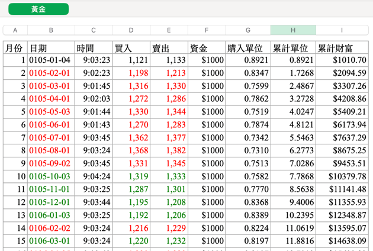
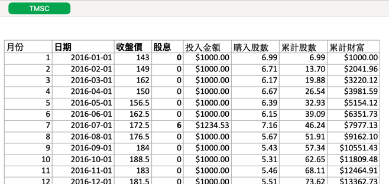
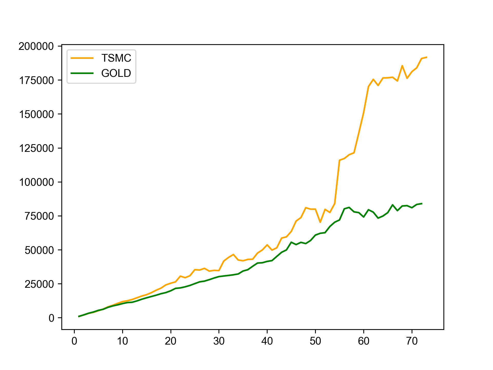

理財達人競賽
Table of Contents

1. 理財達人競賽#1:回到過去
1.1. 背景
正所謂「你不理財、財不離開你」，啊不是，是「你不理財、財不理你」。很多提早實現財富自由的人都是以定期定額的方式達成目標的。有沒有想過，如果你從小六開始，連續六年每個月固定投入一筆金額到某個項目中，到現在的損益狀況會是如何呢？
為了提高各組同學的參與興趣，我打算提供每組以下資源:
- 時光機一部
- 虛擬貨幣144,000: 6年*12個月*每個月2000
現在，你和你的組員可以乘坐時光機回到六年前，將每個月的2000元分成兩筆(每筆1000元)，各自選擇兩種投資商品，然後以試算表來計算貴組六年來的損益情形。也許你會發現，即使這六年中歷經了武漢肺炎+俄烏戰爭，只要選擇夠好的投資標的，你仍然能從這種定期定額的懶人投資法中獲取龐大的利潤。
如果你們在初賽結束後對這種作弊投資成果還滿意，不妨從現在開始，六年後你概碩班畢業正要進入職場，那時就有一筆不小財富囉。
1.2. 競賽目標
- 成為賺最多的人: 這表示貴組獨具慧眼，能挑選出最能賺錢的投資產品
- 成為賠最多的人: 這表示貴組具有放空潛力，以後大家要投資跟貴組反著做就對了
1.3. 競賽規則
1.3.1. 投資期限
2018年1月1日 至 2023年12月31日
1.3.2. 投資規則說明
- 分兩種投資項目，每個項目每月投入1000元
- 兩種投資項目中需包含至少一檔台股
- 股票若有配股配息一律併入下月購買資金，只要基於真實數據均可列入計算(各股配息資訊需自行搜尋)
- 假設所有股票均提供零股買賣，且零股可以小數點買進(現實中股票最低買賣單位為1股)
- 假設零股交易價格與一般交易相同(現實中零股買賣價格不同於市價)
- 選擇其他投資商品如基金、期貨、選擇權、政府公債者需請自行研究獲利計算規則
- 為了符合懶人定期定額投資法則，六年中只能於每月 第一個交易日 買進投資商品（不可短進短出）
- 六年中只定期買進，不進行賣出
- 不考慮手續費、證交稅等額外因素
- 只能選擇可持續交易六年之投資商品(即六年內未下市的投資產品)
1.4. 小組任務
1.4.1. 研究投資標的:
- 小組討論投資項目
- 上傳投資計劃至Padlet，格式不拘，可以是一個Padlet mind map、一張圖表、一個完整的PDF/word檔、或是兩三段文字說明
1.4.2. 搜尋資料: Google
- 收集六年中計算每月累計資金所需資訊
1.4.3. 計算投報率：Excel / Google sheet
- 計算每項獲利
製表(範例如下)

Figure 1: 黃金投資記錄

Figure 2: 股票投資記錄
1.4.4. 資料視覺化: Google Colab + Python / Excel
- 合併組員數據計算全部獲利
繪圖

Figure 3: 投報率分析
1.6. 奬品
1.6.1. 正投報率冠軍小組:
- 期末成績+5
SNIKERS*2
1.6.2. 負投報率冠軍小組:
- 組員期末成績+3
SNIKERS*1
1.7. 關於分組
好像還有很多同學是自己一組，為了降低你的負擔，建議還是找好合作組員，後續許多作業或競賽仍是以組為單位，沒作業就沒有學期成績哦….